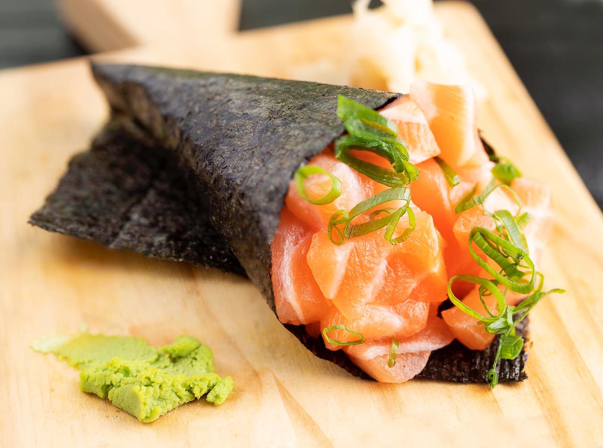

Temaki de Salmão

Receita de Temaki de Salmão
Ingredientes
- Arroz Japonês
- Alga Nori
- Salmão
- Cebolinha
- Cream Cheese
- Gergelim
Modo de Preparo
- Cozinhe e tempero o arroz japonês.
- Limpe e remova as espinhas do salmão.
- Sobre uma tábua, utilize suas mão molhadas para pegar o arroz e colocá-lo sobre uma das algas de nori.
- Coloque em seguida o salmão sobre o arroz.
- Enrole o temaki diagonalmente apra ficar na forma desejada.
- Adicione gergelim e cobolinha a gosto.
Sugestão
Experimente também com atum!